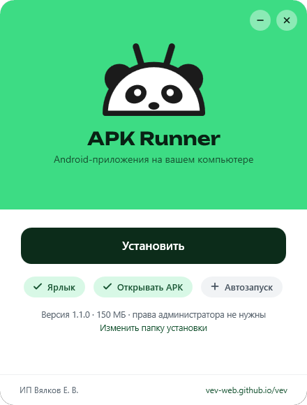
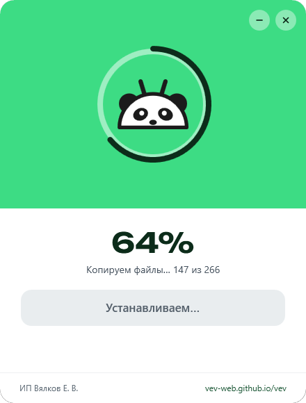
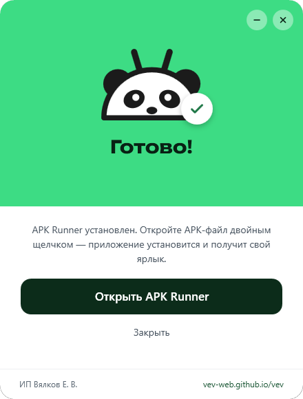
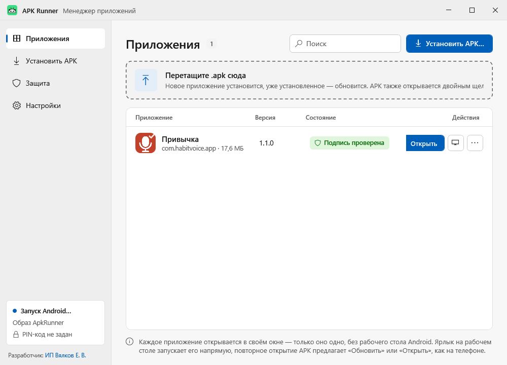
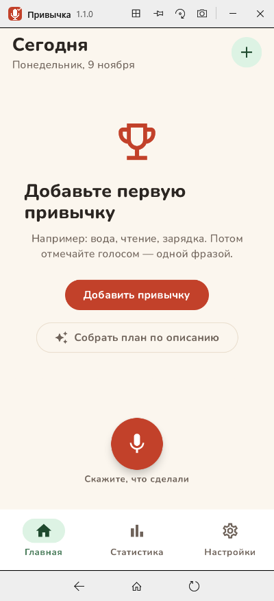
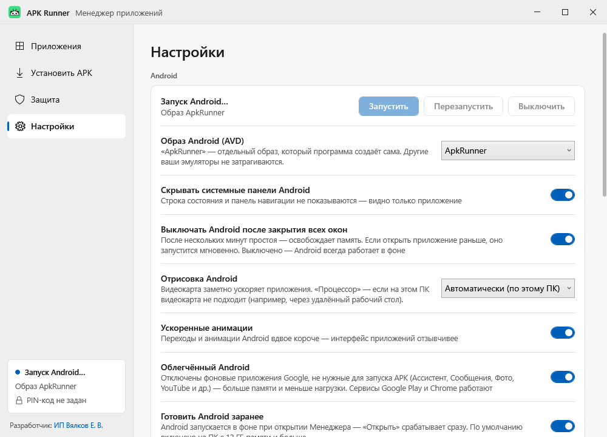

APK Runner
Программа, которая запускает Android-приложения на компьютере с Windows. Есть приложение для телефона в виде APK-файла, а пользоваться им нужно на ПК? Откройте APK-файл двойным щелчком — APK Runner установит приложение и создаст для него ярлык на рабочем столе. Дальше оно запускается в своём окне, как обычная программа Windows: мышью — как пальцем, текст — с клавиатуры. Телефон не нужен.
Скачать для Windows Как установить


Возможности
Android-приложение на ПК — так же просто, как обычная программа.
Каждое приложение — в своём окне
Без «телефона на экране» и лишних меню. Мышь работает как палец, колесо прокручивает, клавиатура вводит текст, в том числе по-русски.
Ярлык на рабочем столе
После установки у приложения появляется свой ярлык с иконкой — запуск в один клик.
Как на телефоне
Двойной щелчок по APK — «Установить», а если приложение уже есть — «Обновить» или «Открыть». Новую версию можно просто перетащить в окно приложения, данные сохранятся.
Связанные APK — одно приложение
Основной и служебные APK, а также пакеты .xapk и .apks ставятся вместе и работают под одним ярлыком.
Мгновенный запуск
Программа ждёт в трее, Android готов заранее — приложение открывается за доли секунды.
Защита
Проверка цифровой подписи APK, запрет подмены приложения и отката на старую версию, PIN-код, режим «только одно приложение», контроль целостности программы.
Подстройка под компьютер
Ядра, память и видеокарта для Android подбираются автоматически. Если на ПК нет Android, программа сама скачает нужные компоненты с сервера Google.
Для организаций
Тихая установка на много компьютеров одной командой, удаление — через «Параметры → Приложения». Программа ничего не отправляет: всё хранится на компьютере.
Как выглядит программа
Менеджер приложений, окно запущенного приложения и настройки.



Как установить
Около минуты. Права администратора не нужны.
- Скачайте установщик APK‑Runner‑Setup‑1.1.0.exe с Яндекс.Диска и запустите его. После скачивания сверьте контрольную сумму SHA‑256 (ниже) — так вы убедитесь, что файл не подменён.
- Если Windows покажет окно «Система Windows защитила ваш компьютер», нажмите «Подробнее», затем «Выполнить в любом случае». Установщик пока не подписан цифровой подписью, поэтому Windows его не узнаёт.
- Нажмите «Установить». Под кнопкой можно выбрать ярлык, открытие APK-файлов и автозапуск вместе с Windows.
- Откройте APK-файл двойным щелчком — приложение установится и получит свой ярлык на рабочем столе. При первом запуске, если на компьютере нет Android, программа предложит скачать его (около 2,3 ГБ).
Для системных администраторов: APK-Runner-Setup-1.1.0.exe /S — тихая установка (параметры: /dir="папка", /autostart, /nodesktop, /noshell, /run); тихое удаление — ApkRunner.exe --uninstall /S.
Системные требования
И сведения о программе.
| Разработчик | ИП Вялков Егор Владимирович |
| Операционная система | Windows 10 или Windows 11, 64 бит |
| Процессор | С аппаратной виртуализацией (Intel VT-x или AMD-V), включённой в BIOS, и компонентом Windows «Платформа низкоуровневой оболочки Windows» |
| Оперативная память | Рекомендуется от 8 ГБ; для мгновенного запуска — от 12 ГБ |
| Место на диске | 150 МБ для программы и около 2,3 ГБ для Android, если его нет на компьютере |
| Интернет | Нужен только при первом запуске, если компоненты Android ещё не установлены |
| Версия | 1.1.0 · установщик 64 МБ |
| Контрольная сумма SHA-256 | 5925A083CF08002C107D0E5FD5377A602D5A336FFDB859FEF5BE9AEE3CDF7645 |
Поддержка
Вопросы, ошибки и предложения по программе — пишите на почту.